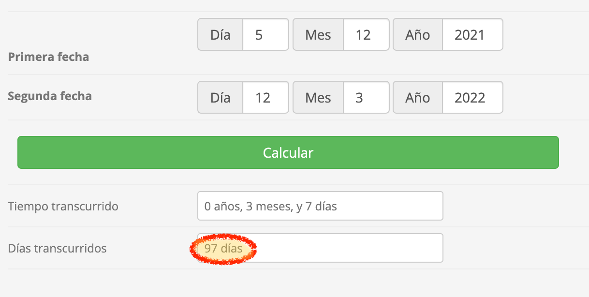

Casos prácticos 2021
Renta Fija (valoración) dic (2021)
Se dispone de la siguiente información relativa a un bono de la empresa ABC:
- Fecha Valor: 5/12/2021
- Fecha de Vencimiento: 15/09/2025
- Cupón anual: 2,25%
- TIR: 3,25%
- Nominal: 5.000 euros
- Hallar el precio del bono a 05-12-2021
- 4.971,75€
- 4.849,55€
- 4.696.90€
- Calcule el importe que deberá integrarse en la base imponible de un contribuyente del IRPF que hubiese suscrito 10 bonos, como consecuencia de los siguientes hechos acaecidos en el Año X:
- 45-09-Año X: cobro del cupón anual
- 16-09-Año X: venta de los 10 bonos por 24.500 / bono
- 28-12-Año X: compra de 5 bonos de la misma emisión
- Base imponible = 3.125 - 5.000 = - 1.875
- Base imponible = 3.125 - 2.500 = 625
- Base imponible = 3.125
Cobertura con Futuros dic (2021)
Un cliente a 30 de noviembre de 2021 mantenía una cartera de acciones de la bolsa española por valor de 2.535.327 euros. Ante la incierta situación de los mercados, decide hoy, 5 de diciembre del 2021, reducir el riesgo sistemático o de mercado de su cartera a cero, utilizando para ello contratos de futuros sobre el IBEX-35. El cliente desará su posición en la fecha de vencimiento del futuro, 18 de marzo. La situación de los mercados es la siguiente:
Al iniciar la operativa:
IBEX-35 al contado: 8.241,70
Beta de la cartera 1,12
Futuro IBEX-35 vencimiento 17/12/2022 8.200
Futuro IBEX-35 vencimiento 18/03/2022 8.250
(El tick del contrato es 1 punto y su valor monetario unitario es de 10 euros)
Al momento de cerrar su posición la situación del mercado era la siguiente (T= 18 de marzo):
- Valor efectivo de la cartera 1.950.324 euros
- IBEX-35 al contado 6.557,34
- Futuro IBEX35 mismo vencimiento que el contratado 6.560
- Determinar la ratio de cobertura.
- Vender 30 contratos
- Comprar 35 contratos
- Vender 35 contratos
La respuesta correcta es la b.
\[RC=\frac{2535327\cdot 1.12}{8241.70\cdot 10}=34.45364\dots \:\approx 35\:\:\:\]
- Determinar el resultado bruto de la operación de cobertura con futuros (contado + cobertura),
- Pérdida de 78.003 euros
- Beneficio de 6.497 euros
- Beneficio de 1.231 euros
La respuesta correcta es la b.
Con la venta de los contratos ingresa:
\[\left(8250-6560\right)\cdot \:35\cdot \:10=591500\] Mientras que por la caída del precio de la cartera, pierde:
\[1950324-2535327=-585003\] Así, el resultado bruto de la operación de cobertura con futuros (contado + cobertura) arroja un valor positivo de la operación iagual a:
\[591500-585003=6497\]
- Obtener la rentabilidad efectiva anualizada de la operación (contado-futuro) a la fecha de vencimiento.
- 0,23%
- 1,03%
- 1,34%
La respuesta correcta es la b.
La rentabilidad obtenida en los 97 días de la operación (un trimestre aproximadamente)

será de:
\[r_t=\frac{\left(2535327+6497\right)-2535327}{2535327}=0.002562(0.2562\%)\]
Que, igualmente podíamos haber obtenido el mismo resultado, simplemente poniendo en relación (cociente) lo que obtenemos, entre lo que desembolsamos inicialmente:
\[r_t=\frac{6497}{2535327}=0.002562(0.2562\%)\]
Para anualizar en capitalización compuesta, planteamos la siguiente equivalencia financiera:
\[\left(1+i\right)=\left(1+0.002562\right)^{4\:}=0.01028\left(\approx 1.03\%\right)\]
Renta variable dic (2021)
Disponemos de los siguientes datos del balance de la compañía BETA, S.L.: (cifras en euros)
| ACTIVO | AXO X | AXO X-1 |
|---|---|---|
| Inmuebles | 2.700.000,00 | 2.145.000,00 |
| Equipos | 975.000,00 | 754.000,00 |
| Activo Fijo | 3.675.000,00 | 2.899.000,00 |
| Inventario | 975.000,00 | 806.000,00 |
| Cuentas por cobrar | 600.000,00 | 500.500.00 |
| Tesorería | 1.125.000,00 | 806.000,00 |
| Activo corriente | 2.700.000,00 | 2.112.500,00 |
| TOTAL ACTIVO | 6.375.000,00 | 5.011.500,00 |
| PASIVO | AXO X | AXO X-1 |
| Capital Social | 600.000,00 | 520.000,00 |
| Reservas | 2 .700.000,00 | 2.223.000,00 |
| Fondos Propios | 3.300.000,00 | 2.743.000,00 |
| Deuda financiera | 2.700.000,00 | 1.982.500,00 |
| Acreedores C/P | 375.000,00 | 286.000,00 |
| TOTAL PASIVO | 6.375.000,00 | 5.011.500,00 |
Adicionalmente, se conoce la siguiente información:
- El balance ha sido revisado, obteniéndose un informe favorable del auditor.
- El Beneficio Neto para el Año X ha ascendido a 850.000 euros.
- El pay-out de la empresa es del 60%.
- La empresa BETA S.L. tiene 2.200.000 acciones en circulación.
- El precio de la acción a fecha de hoy es de 6,50 euros/acción.
- La rentabilidad de la renta fija (Obligaciones del Estado a 10 años) es del 0,75%.
- La Sra. González es una accionista de la compañía que posee el 25% del capital social. Además, ejerce el cargo de directora general, percibiendo por ello una retribución que representa la totalidad de los rendimientos del Tiempo restante 1:09:17 en el IRPF.
- ¿Cuál de las siguientes secuencias de ratios es a correcta?
| PER | PVC | EYG | DY | ROE | |
|---|---|---|---|---|---|
| a | 16,82 | 4,64 | 0,13 | 3,57% | 27,60% |
| b | 16,82 | 0,22 | 0,13 | 5.94% | 16,56% |
| c | 28,04 | 4,64 | 0,04 | 3,57% | 16,56% |
Secuencia a.
Secuencia b.
Secuencia c.
La respuesta correcta es la .
- Basándose en los resultados obtenidos, y teniendo en cuenta que los siguientes datos corresponden a la media del sector, determinar, con base en la información suministrada, si es compañía. adecuado invertir en acciones de esta
Datos del sector:
- PER = 17,00
- Precio sobre valor contable (PVC) = 5,50
- Rentabilidad sobre fondos propios (ROE) 25,00%
Es adecuado
No es adecuado
Es indiferente
La respuesta correcta es la .
- Indique cuál de las siguientes afirmaciones es correcta en relación con la declaración de las acciones de la Sra. González en el Impuesto sobre el Patrimonio correspondiente al Año X:
- La Sra. González NO puede aplicar sobre las acciones que posee en la compañía BETA S.L. la exención prevista por el artículo 4.0cho.Dos de la Ley 19/1991, de 6 de junio, del Impuesto sobre el Patrimonio.
- Valor sujeto a gravamen: 825.000 euros
- La Sra. González puede aplicar sobre las acciones que posee en la compañía BETA S.L. la exención prevista por el artículo 4.0cho.Dos de la Ley 19/1991, de 6 de junio, del Impuesto sobre el Patrimonio en los siguientes términos:
- Valor exento de gravamen: 825.000 euros
- La Sra. González puede aplicar sobre las acciones que posee en a compañía BETA S.L. la exención prevista por el artículo 4.0cho. Dos de la Ley 19/1991, de 6 de junio, del Impuesto sobre el Patrimonio en los siguientes términos:
- Valor exento de gravamen: 618.750 euros
- Valor sujeto a gravamen: 206.250 euros
La respuesta correcta es la .
Gestión de carteras dic (2021)
Una vez establecido el horizonte temporal del cliente y su propensión al riesgo, usted ha decido crearle una cartera con la siguiente distribución: 60% renta variable y 40% renta fija.
Después de un riguroso proceso de análisis de fondos de inversión, ha decidido por un fondo de renta variable global y un fondo de renta fija a largo plazo cuyas estadísticas para los últimos tres años son las siguientes:
| Rentabilidad acumulada | Volatilidad anualizada | Beta | |
|---|---|---|---|
| Fondo RV Eurozona | 27% | 15% | 0,9 |
| Indice de RV Eurozona | 25% | 12% | |
| Fondo RF Europa largo plazo | 5% | 5% 5% 0,7 | 0,7 |
| indice RF Europa largo plazo | 3% | 3% |
- Si para el próximo año la rentabilidad esperada del mercado de renta variable es del 20% y del de renta fija es del 7%; ¿cuál será la rentabilidad esperada de la cartera?
- 12,20%
- 14,80%
- 5,92%
La respuesta correcta es la .
- Si esperamos que la volatilidad se mantenga constante y e coeficiente de correlación entre los fondos escogidos es del 0,40, ¿cuál será la volatilidad de la cartera para el próximo año?
- 7,71%
- 0,99%
- 9,97%
La respuesta correcta es la .
- Su cliente está interesado en adquirir 250.000 euros de un ETF de futuros del Bitcoin y no dispone de la suficiente liquidez para su compra. Para ello, acude a su entidad bancaria en busca de financiación. La propuesta que le hace la entidad bancaria es la siguiente:
- Préstamo de 150.000 euros
- Período a 48 meses
- Tipo de interés nominal 2,5%
- Comisión de apertura : 0,20%
¿Cuál es la TAE de la operación de financiación que la entidad Bancaria le ofrece a su cliente?
- 2,70%
- 2,63%
- 2,55%
La respuesta correcta es la .
Fiscalidad (2021)
A comienzos del ejercicio 2021 el Sr. García, un contribuyente del IRPF, es titular de las siguientes inversiones:
10.000 acciones de la Empresa “A”, que fueron adquiridas en el año 2018 a un precio de 10 euros acción.
1.000.000 de acciones de la Empresa “B”, que fueron adquiridas en la herencia de su madre, y que se que se valoraron a efectos del Impuesto sobre Sucesiones y Donaciones por 2.500.000 euros.
En relación con la inversión mantenida en la Empresa “A”, se sabe que dicha empresa ha llevado a cabo en el año 2021 una ampliación de capital mediante la entrega de acciones liberadas, ofreciendo 1 acción nueva por cada 4 antiguas.
Preguntas
- Si el Sr. García decidiera no acudir a la ampliación liberada ya que la cotización de las acciones de la Empresa “A” está bajando mucho y optase por vender sus 10.000 derechos de suscripción por importe de 0,20 euros cada uno, ¿cuál sería el tratamiento fiscal aplicable?
El Sr. García obtendría una ganancia patrimonial por importe de 2.000 euros, importe que integrar en la base imponible general del IRPF, ya que los derechos de suscripción permanecen en su patrimonio menos de un año.
El Sr. García obtendría una ganancia patrimonial por importe de 2.000 euros, que debería integrar en la base imponible del ahorro del IRPF.
La venta de derechos de suscripción minoraría el coste de adquisición de las acciones de las que proceden los derechos transmitidos.
La respuesta correcta es la b.
¿Qué consecuencias fiscales tengo en una ampliación de capital con mis acciones?
En caso de una ampliación de capital, se pueden dar tres situaciones.
La primera es que el contribuyente acuda a la misma y obtenga acciones totalmente liberadas de tal modo que la adquisición de nuevas acciones no afectaría a su declaración de IRPF, en tanto no las transmita.
La segunda es que no acuda a la ampliación ni venda los derechos de suscripción, de tal modo que si la empresa que amplía capital compra a un precio fijo los derechos que no se ejerciten, renunciando a ampliar capital por los derechos adquiridos, la compensación que recibirá el contribuyente se calificaría como dividendo y tendrá la consideración de rendimiento del capital mobiliario.
Por último, si el contribuyente no acude a la ampliación de capital y vende en el mercado los derechos de suscripción, dicha transmisión generará una ganancia patrimonial que también tributará en la base del ahorro a los tipos señalados más abajo.
Tipos de gravamen del ahorro en el IRPF
Con efectos desde 1 de enero de 2021, se modifica la escala que se aplica a la parte de la base liquidable del ahorro para determinar la cuota íntegra estatal añadiéndose un nuevo tramo a la parte de la base liquidable del ahorro que exceda de 200.000 euros al que se aplicará un tipo del 26,00%
Así, en este caso, la escala aplicable a la base liquidable del ahorro del Sr. García será la siguiente:
Base l iquidable del ahorro Hasta euros |
Cuota íntegra Euros |
Resto base l iquidable del ahorro Hasta euros |
Tipo a p licable *Po r c e ntaje** |
|---|---|---|---|
| 0 | 0 | 6.000 | 19 |
| 6.000,00 | 1.140 | 44.000 | 21 |
| 50.000,00 | 10.380 | 150.000 | 23 |
| 2 00.000,00 | 44.880 | En adelante | 26 |
(Se modifican los artículos 66 y 76 de la LIRPF por el artículo 59 de la LPGE para 2021).
Novedades fiscales 2021 (acreditaciones oficiales de EFPA España)
- Si el Sr. García decidiera acudir a la ampliación liberada y posteriormente vendiera todas sus acciones de la Empresa “A” a 12 euros/acción, ¿a cuánto ascendería la ganancia patrimonial obtenida?
10.000 x (12 - 8) = 40.000
10.000 X (12 - 10) = 20.000
12.500 X (12 - 8) = 50.000
La respuesta correcta es la c.
Ahora tenemos que recordar que tras la ampliación de capital que se llevado a cabo en el año 2021 (entrega de acciones liberadas, ofreciendo 1 acción nueva por cada 4 antiguas), el Sr. García tendrá en su patrimonio un total de acciones de la Empresa “A” de:
\[ N_{acciones}=10000+\frac{10000}{4}=12500 \]
12.500 acciones. Y, cuyo precio unitario resultante tras la operación será de:
\[ P=\frac{10000\cdot \:10}{12500}=8 \]
De forma que, si vende las 12.500 acciones que posee a un precio de 12 euros/acción, la ganancia patrimonial obtenida, y que por lo tanto que debería integrar en la base imponible del ahorro del IRPF ascendería a un importe total de 50.000 euros:
\[BIA=12500 \cdot (12 - 8) = 50.000\] Donde de nuevo, la escala aplicable a la base liquidable del ahorro del Sr. García, para la referida BIA de 50.000 euros sería la siguiente:
Base l iquidable del ahorro Hasta euros |
Cuota íntegra Euros |
Resto base l iquidable del ahorro Hasta euros |
Tipo a p licable *Po r c e ntaje** |
|---|---|---|---|
| 0 | 0 | 6.000 | 19 |
| 6.000,00 | 1.140 | 44.000 | 21 |
| 50.000,00 | 10.380 | 150.000 | 23 |
| 2 00.000,00 | 44.880 | En adelante | 26 |
Donde se aprecia que el tipo máximo al que tributará será el 21%, y siendo por tanto su cuota integra de 1.140 (por el tramos del 19%) + 10.380 (por el tramos del 21%)
Novedades fiscales 2021 (acreditaciones oficiales de EFPA España)
- ¿Qué coste fiscal correspondería en el IRPF del año 2021 del Sr. García si la Empresa “B” distribuyera un dividendo de 100.000 euros?
100.000 x 23% = 23.000 euros
Base liquidable = 100.000;
Hasta 50.000 euros = 10.380 euros;
Resto, 50.000 euros al 23% = 11.500 euros;
Suma: 21.880 euros
Los dividendos procedentes de acciones adquiridas por herencia están exentos.
La respuesta correcta es la b.
En este caso tenemos que para una base liquidable de 100.000 en el ejercicio fiscal 2021, se aplican los siguientes tramos de la base imponible del ahorro
Base l iquidable del ahorro Hasta euros |
Cuota íntegra Euros |
Resto base l iquidable del ahorro Hasta euros |
Tipo a p licable *Po r c e ntaje** |
|---|---|---|---|
| 0 | 0 | 6.000 | 19 |
| 6.000,00 | 1.140 | 44.000 | 21 |
| 50.000,00 | 10.380 | 150.000 | 23 |
| 2 00.000,00 | 44.880 | En adelante | 26 |
que aplicados a nuestro caso, quedaría del siguiente modo:
Base liquidable = 100.000;
Hasta 6.000 euros 1.140 euros;
Hasta 44.000 euros = 9.240 euros;
Resto, 50.000 euros al 23% = 11.500 euros;
Suma: 21.880 euros
Normativa: Art. 46 Ley IRPF
Las ganancias y pérdidas patrimoniales que se pongan de manifiesto con ocasión de transmisiones de elementos patrimoniales integran la base imponible del ahorro.
Normativa: Art. 49, disposición adicional trigésimo novena.1; y disposición transitoria séptima.5 Ley IRPF
La integración y compensación de rentas en la base imponible del ahorro se realiza, en dos fases: la primera tiene por objeto determinar la base imponible del ahorro obtenida en el propio período impositivo y, la segunda compensación con el saldo positivo, en su caso, obtenido, las partidas negativas hechos de ejercicios anteriores que están pendientes de compensación.
Novedades fiscales 2021 (acreditaciones oficiales de EFPA España)
- ¿Qué ganancia de patrimonio tendría que declarar el Sr. García si decidiese vender las acciones de la Empresa “B” por 3.000.000 de euros?
- 500.000 euros
- 1.000.000 de euros
- 12.500 x (12 - 8) = 50.000
La respuesta correcta es la a.
La venta de acciones tributa en la base del ahorro como una ganancia o pérdida patrimonial,
PLUSVALÍA = VALOR DE TRASMISIÓN – VALOR DE ADQUISICIÓN
El valor de trasmisión se computa con el precio de venta (3.000.000) menos los gastos que hayamos asumido (en este caso no nos dicen que haya comisiones, canon de bolsa, etc) para realizar dicha trasmisión.
El valor de adquisición se computa con el precio de compra (2.500.000 euros) y se suman los gastos (no nos dicen que haya gastos de venta):
\[BIA=3.000.000-2.500.000= 500.000\]
Novedades fiscales 2021 (acreditaciones oficiales de EFPA España)
Renta Fija (2021)
Disponemos de la siguiente información relativa a un bono de la empresa DELTA
- NOMINAL 100.000 EUR
- CUPON ANUAL 4,50
- TIR A VENCIMIENTO 5%
- FECHA VALOR 1-08-2021
- FECHA VENCMIENTO 31-12-2024
- Hallar el precio del bono a 1-08-2021
101063,9461
100660,8685
102432,2342
La respuesta correcta es la a.
En primer lugar tenemos que calcular el precio entero de este bono. Para ello utilizaremos la siguiente metodología de cálculo:
\[P_0=\sum_{ t=1}^{ n}\frac{F_t}{(1+r)^{t}}\]
donde,
\(P_0\), es el precio entero de un bono o valor actual del mismo (\(V_0\)).
\(F_t\), Flujos a percibir por la tenencia de un bono (cupón y principal).
\(r\), es la TIR.
\(t\), es el tiempo.
Donde si sustituimos por los datos del problema y calculamos, tenemos que el precio actual (a fecha 1-08-2021) del bono es de:
\[P_{(1-08-21)}=\frac{4500}{\left(1+0.05\right)^{\frac{152}{365}}}+\frac{4500}{\left(1+0.05\right)^{1+\frac{152}{365}}}+\frac{4500}{\left(1+0.05\right)^{2+\frac{152}{365}}}+\frac{104500}{\left(1+0.05\right)^{3+\frac{152}{365}}}\] \[P_{(1-08-21)}=101063.94618\]
- Calcular la duración del bono
3,16286
3,85122
4,02241
La respuesta correcta es la a.
En este caso para calcular la Duración de Macaulay (o simplemente, la “Duración”), vamos a realizar el siguiente cálculo:
\[D=\frac{\sum_{t=1}^{n}\frac{F_t\cdot t}{\left(1+r\right)^t}}{P}\]
donde,
\(D\), Duración de Macaulay.
\(F_t\), Flujos a percibir por la tenencia de un bono (cupón y principal).
\(P\), es el precio entero de un bono o valor actual del mismo (\(V_0\)).
\(r\), es la TIR.
\(t\), es el tiempo.
De manera que si sustituimos por los datos del problema y calculamos, tenemos que la Duración del bono es de:
\[D=\frac{\left(\frac{152}{365}\right)\frac{4500}{\left(1+0.05\right)^{\frac{152}{365}}}+\left(1+\frac{152}{365}\right)\frac{4500}{\left(1+0.05\right)^{1+\frac{152}{365}}}+\left(2+\frac{152}{365}\right)\frac{4500}{\left(1+0.05\right)^{2+\frac{152}{365}}}+\left(3+\frac{152}{365}\right)\frac{104500}{\left(1+0.05\right)^{3+\frac{152}{365}}}}{101063.94618}\]
\[D=3.162\]
- Si la TIR sube 40 p.b. calcular el nuevo precio del bono
99142,747
101025,372
99846.562
La respuesta correcta es la c.
En primer lugar calculamos la duración corregida a partir de la duración que hemos calculado en el apartado anterior:
\[D_{corregida}=\frac{Duracion\,de\, Macaulay}{\left(1+TIR\right)}=\frac{D}{\left(1+TIR\right)} \] De forma que nuestra duración corregida será:
\[D_{corregida}=\frac{3.162}{1+0.05}=3.01142\] Para estimar la variación del precio ante variaciones en la TIR emplearemos la siguiente expresión,
\[P_1\simeq P_0\cdot\left[1+((-D_{corregida})\cdot\Delta TIR)\right]\]
donde,
\(P_1\), es el precio estimado del bono ante una variación de la TIR.
\(P_0\), es el precio actual del bono .
\(D_{corregida}\), es la duración corregida.
Si sustituimos por los datos del problema y calculamos, tenemos que el nuevo precio del bono ante una subida de la TIR sube de 40 p.b. será de:
\[P_1\simeq 101063.94618\left(1+\left(\left(-3.01142\right)\cdot \:0.004\right)\right)=99846.56222\]
Performance 2021
Un cliente está considerando realizar una inversión en fondos de Renta Variable Americana. El cliente desea saber su opinión de en cuál de los dos siguientes fondos debería invertir.
| Fondo A | Fondo B | Índice de Mercado | Activo libre de riesgo * | |
|---|---|---|---|---|
| Re ntabilidad * | 19,50 | 16,60 | 15,00 | 1,25 |
| V olatilidad * | 10,15 | 11,20 | 10,30 | 0,00 |
| Beta | 0,75 | 0,95 | 1,00 | 0,00 |
*Rentabilidad anualizada a 3 años
*Rentabilidad del bono EE.UU a 10 años
Se pide:
- Calculara el Ratio de Sharpe para cada uno de los fondos.
Fondo A = 1,74 y Fondo B = 1,20
Fondo A : 0,24 y Fondo B = 0,16
Fondo A = 1,80 y Fondo B = 1,37
La respuesta correcta es la c.
Nos piden calcular el ratio de Sharpe,
\[S_p=\frac{E_p-R_f}{\ \sigma_p}\]
Donde,
\(S_p\), es ratio de Sharpe.
\(E_p\), es la rentabilidad esperada de la cartera \(p\).
\(R_f\), es la rentabilidad del activo sin riego.
\(\sigma_p\), es la volatilidad (riesgo) de la cartera \(p\).
De forma que sustituimos los datos y calculamos:
\[S_A=\frac{0.195-0.0125}{0.1015}=1.7980\] \[S_A=\frac{0.166-0.0125}{0.1120}=1.3705\]
Del valor numérico del ratio de Sharpe podemos extraer algunas conclusiones. En términos de rentabilidad, mientras mayor sea el índice de Sharpe, mejor es la rentabilidad del fondo comparado directamente a la cantidad de riesgo que se ha asumido en la inversion. Si el índice o ratio de Sharpe es negativo, indica un rendimiento inferior a la rentabilidad sin riesgo. Todo ratio de Sharpe inferior a uno significa que el rendimiento del activo es inferior al riesgo que estamos asumiendo al invertir en un activo determinado. Cuando la volatilidad del fondo de inversión es grande, asumimos más riesgo y por ende el ratio de Sharpe será menor, a no ser que el rendimiento del fondo en concreto compense esa mayor rentabilidad.
- Calcular el Ratio de Información para cada uno de los fondos.
Fondo A = 1,10 y Fondo B = 0,50
Fondo A = 1,25 y Fondo B = 0,43
Fondo A = 0,52 y Fondo B 1,35
La respuesta correcta es la b.
\[RI=\frac{\alpha_p}{\sigma_{\alpha,p}}=\frac{E_p-\beta _p\:\cdot \:E_m}{\sqrt{\sigma _p^2-\beta _p^2\cdot \:\sigma _m^2}}\]
Donde,
\(\alpha_p\), es el alfa de la cartera \(p\).
\(\sigma_{\alpha,p}\), es la desviación típica (volatilidad o riesgo) del alfa respecto de la cartera \(p\).
De forma que sus sustituimos y calculamos obtenemos que el rating información para el fondo a es de:
\[RI_A=\frac{0.195-0.75\cdot \:0.15}{\sqrt{0.1015^2-0.75^2\cdot \:0.103^2}}=1.25306\dots \]
\[RI_B=\frac{0.166-0.95\cdot \:0.15}{\sqrt{0.112^2-0.95^2\cdot \:0.103^2}}=0.43125\dots \]
El resultado del Information Ratio refleja cuanta rentabilidad de más obtiene el fondo o cartera (respecto a su índice de referencia) por una unidad de riesgo de desviación del índice de referencia (que es el Tracking Error). Cuanto mayor sea este Ratio mejor.
- Calcular el Alfa de Jensen para cada uno de los fondos.
Fondo A = 3,29 y Fondo B = 7,94
Fondo A = 3,25 y Fondo B = -0,50
Fondo A = 7,94 y Fondo B = 2,29
La respuesta correcta es la c.
Tenemos que calcular el alfa de Jensen con la siguiente expresión:
\[\alpha_J=R_p-\left[R_f+\left(E_m-R_f\right)\cdot\beta_p\right]\] Donde,
\(\alpha_J\), es el alpha de Jensen.
\(R_p\), es la rentabilidad obtenida de la cartera \(p\).
\(R_f\), es la rentabilidad del activo sin riego.
\(\beta_p\), es la beta (sensibilidad a los movimientos del mercado) de la cartera \(p\).
De forma que, para el fondo A tenemos tenemos que
\[\alpha_J^{A}=0.195-\left(0.0125+\left(0.15-0.0125\right)\cdot \:0.75\right)=0.079375\] y para el fondo B,
\[\alpha_J^{B}=0.166-\left(0.0125+\left(0.15-0.0125\right)\cdot \:0.95\right)=0.022875\]
El Alpha de Jensen representa, en términos absolutos, la diferencia entre la rentabilidad obtenida por una cartera y la que debería obtener en función del nivel de beta asumido según la SML:
Comparando varias carteras de activos para \(\alpha>0\) la cartera está infravalorada y representa una oportunidad de inversión; para \(\alpha<0\) la cartera está sobrevalorada y por tantnto no ofrece suficiente renrtabilidad a los inversores racionales para aceptar su nivel de riesgo sistemático.
De forma que este alfa se obtinen de igualar a cero la ecuación del CAPM (SML):
\[R_p=\left[R_f+\left(E_m-R_f\right)\cdot\beta_p\right]\]
\[0=E_p-\left[R_f+\left(E_m-R_f\right)\cdot\beta_p\right]\]
\[\alpha_J=R_p-\left[R_f+\left(E_m-R_f\right)\cdot\beta_p\right]\]
Gestión de carteras 2021
| Acciones | Rentabilidad | Volatilidad | Covarianza |
|---|---|---|---|
|
7,50% | 8,00% | 0,00576 |
| GHI | 16,25% | 20,00% | 0,0204 |
| Índice de Mercado | 12,00% | 12,00% | |
| Activo sin riesgo | 4,00% |
Se pide:
- Calcular la rentabilidad esperada y la volatilidad de una cartera compuesta por el 75% de acciones ABC y el acciones GHI, sabiendo que la correlación entre ambas acciones es de 0,50
Rentabilidad = 10,09% y Volatilidad = 10,02%
Rentabilidad = 9,70% y Volatilidad = 9,54%
Rentabilidad = 9,25% y Volatilidad = 9,50%
La respuesta correcta es la b.
En primer lugar vamos a calcular la rentabilidad esperada de una cartera con la siguiente fórmula:
\[E_p=w_1\cdot E_1+w_2\cdot E_2+...+w_n\cdot E_n\]
Donde,
\(E_p\), es la rentabilidad esperada de la cartera.
\(w_n\), es la ponderación (o proporción) del activo \(n\) dentro de la cartera.
\(E_n\), es rentabilidad esperada del activo \(n\).
Así, si sustituimos los valores del enunciado en la fórmula anterior tenemos que:
\[E_p=0.75\cdot \:0.075+0.25\cdot \:0.1625=0.096875(9.70\%)\] Para calcular el riesgo (Volatilidad) de la cartera tenemos que escribir la volatilidad de la cartera en función del coeficiente de correlación que nos dice el enunciado que es del (\(\rho=0.5\)):
\[\sigma_p=\sqrt{w_{1}^2\cdot\sigma_1^2+w_2^2\cdot\sigma_2^2+2\cdot w_1\cdot w_2\cdot\rho_{1,2}\cdot\sigma_{1}\cdot\sigma_{2}}\]
Donde,
\(\sigma_p\), es la volatilidad (riesgo) de la cartera \(p\).
\(w_1\), es la ponderación (o proporción) del activo \(1\) dentro de la cartera \(p\).
\(\sigma_1\), es la volatilidad del título \(1\).
\(w_2\), es la ponderación (o proporción) del activo \(2\) dentro de la cartera \(p\).
\(\sigma_2\), es la volatilidad del título \(2\).
\(\rho_{1,2}\), es el coeficiente de correlación entre los activos 1 y 2.
De forma que si ahora sustituimos y calculamos, tenemos que:
\[\sigma_p=\sqrt{0.75^2\cdot \:0.08^2+0.25^2\cdot \:0.2^2+2\cdot \:0.25\cdot \:0.75\cdot \:0.08\cdot \:0.2\cdot \:0.5}\]
\[\sigma_p=0.09539(9.54\%) \]
- Calcular las betas de las acciones ABC y GHI
Beta ABC = 0,20 y Beta GHI = 1,22
Beta ABC = 0,30 y Beta GHI = 1,20
Beta ABC = 0,40 y Beta GHI = 1,42
La respuesta correcta es la c.
Nos piden calcular la beta de un activo y NO de la cartera:
Tenemos que darnos cuenta de que en este caso la vamos a calcular con laco varianza, y por lo tanto utilizaremos la primera expresión de las dos que tenemos a continuación:
\[\beta_{i,m}=\frac{\sigma_{i,m}}{\sigma_m^2}=\frac{\sigma_i}{\sigma_m}\cdot\rho_{i,m}\]
Donde,
\(\beta_{i, m}\), es la beta del activo \(i\) respecto del mercado \(m\).
\(\sigma_{i,m}\), es la covarianza entre las rentabilidades del activo \(i\) y el mercado \(m\).
\(\sigma_m^2\), es la varianza del mercado \(m\).
\(\sigma_i\), es la volatilidad del activo \(i\).
\(\sigma_m\), es la volatilidad del mercado \(m\).
\(\rho_{i,m}\), es el coeficiente de correlación entre el activo \(i\) y el mercado \(m\).
De forma que si sustituimos y calculamos la beta de la empresa ABC:
\[\beta_{ABC, m}=\frac{0.00576}{0.12^2}=0.4\]
y para la empresa GHI:
\[\beta_{GHI, m}=\frac{0.0204}{0.12^2}=1.416(\approx1.42) \]
El coeficiente beta del activo i representa la variación que, por término medio, experimenta la rentabilidad del activo i respecto a una variación unitaria en la rentabilidad del índice de referencia (o mercado).
| Clasificación del activo | Valor de beta | Interpretación |
|---|---|---|
| DEFENSIVO | \(-1<\beta<1\) | Son activos poco arriesgados, ya que en proporción varían menos que el índice. |
| AGRESIVO | \(\beta>1\ o \ \beta < -1\) | Son activos poco arriesgados, ya que en proporción varían menos que el índice. |
| NEUTRO | \(\beta=1\ o \ \beta=-1\) | Son activos poco arriesgados, ya que en proporción varían menos que el índice. |
Renta Variable (nuevo)
Dispones del balance de una compañía (cifras en euros):

El Beneficio Neto para el año X ha ascendido a 685.000 euros
El pay-out de la empresa es del 35%
La capitalización bursátil es de 6.576.000 euros
Tiene 1.500.000 acciones en circulación
EI precio de la acción a fecha de hoy es de 4,38 euros/acciones
La rentabilidad de la renta fija (Obligaciones del Estado a 10 años) es del 1,31%
Se pide:
1. Calcular los siguientes ratios bursátiles para el año X:
Precio sobre valor contable (PVC)
Earnings yield gap
a. PVC = 1,54 y EYG = 8,10
b. PVC = 2,29 y EYG = 9,75
c. PVC = 2,99 y EYG = 9,10
La respuesta correcta es la c
En primer lugar el valor contable,
El valor contable de una acción es la cantidad de Patrimonio Neto o Recursos Propios que le corresponde a cada acción. Para su cálculo simplemente se divide el total del patrimonio neto de la empresa (capital social más reservas o también llamado recursos propios) entre el número de acciones. De forma que si:
\[ V.Contable=\frac{Fondos \ propios}{Nº \ acciones} \]
tenemos que, para el año X,
\[ V.Contable=\frac{2.200.000}{1.500.000}=1,4667 \]
Una vez que tenemos calculado el valor contable podemos calcular cuál será el PVC (“Price to Book Value” o “P/BV” del inglés). Este ratio bursátil que mide la relación entre el precio al que cotizan las acciones con el valor de sus fondos propios, es decir, el valor contable de sus activos menos el valor contable de sus deudas.
\[ PVC=\frac{PPA}{V.Contable} \]
tenemos que, para el año X,
\[ PVC=\frac{4,38}{1,4467}=2,99 \]
A continuación vamos a calcular el PER (acrónimo del inglés de: Price Earning Ratio). Este ratio mide la relación entre el precio en bolsa de una acción y los beneficios que obtiene año tras año.
En este caso en lugar del precio tomaremos la capitalización bursátil, y en lugar del beneficio por acción, utilizaremos el beneficio neto o beneficio después de impuestos. Ya que podemos emplear para hacer estos cálculos tanto, como un valor unitario por acción o como el agregado del total de la empresa:
\[ PER=\frac{C.Bursatil}{BDI} \]
tenemos que, para el año X,
\[ PER=\frac{6.576.000}{685.000}=9.6 \]
Conocido el PER podemos calcular Earnings yield gap (EYG). Esto es un modelo de valoración del mercado bursátil basado en la comparación de dos ratios de rentabilidad: la rentabilidad de los beneficios con la rentabilidad de la renta fija a largo plazo (Obligaciones del Estado a 10 años, en nuestro caso).
qué será:
\[ EYR=\frac{1}{PER}-R_f \]
así tenemos para el año X,
\[ EYR=\frac{1}{9.6}-0.0131=0.0910(9.10\%) \]
2. Calcular los siguientes ratios bursátiles para el año X:
Dividend yield
Rentabilidad sobre fondos propios (ROE)
a. DY = 3,64 y ROE = 31,13
b. DY = 5,21 y ROE = 32,05
c. DY = 5,21 y ROE = 31,13
La respuesta correcta es la a
Nos piden el Dividend yield, es decir, la rentabilidad por dividendo (RD). Este ratio relaciona los dividendos anuales estimados por acción (DPA) y el precio de la acción (\(P_0\)):
\[ Dividend \ Yield (RD)=\frac{DPA}{P_o} \]
Para ello vamos a calcular, en primer lugar, el dividendo por acción (DPA), que es el numerador de la expresión anterior. Para ello bastará multiplicar el pay-out, proporción de beneficios que la compañía reparte a los accionistas en forma de dividendos por el beneficio por acción:
\[ DPA = BPA \cdot pay-out \]
para obtener el DPA, tenemos calcular también el beneficio por acción. Lo podemos hacer a través del PER, de la siguiente manera:
\[ BPA=\frac{P_0}{PER} \]
así, el calculo quedará
\[ BPA=\frac{4.38}{9.6}=0.45625 \]
\[ DPA = 0.45625 \cdot 0.35=0.1596 \]
finalmente el Dividend yiel será,
\[ Dividend \ Yield (RD)=\frac{0.1596}{4.38}=0.03644 \]
Ahora vamos a calcular el la rentabilidad sobre fondos propios, ROE (del ingés Return on Equity). La rentabilidad sobre fondos propios es el resultado de dividir los beneficios netos después de impuestos (BDI) de la empresa entre el valor de los fondos propios de la empresa:
\[ ROE=\frac{BDI}{FP} \]
donde calculamos,
\[ ROE=\frac{685.000}{2.200.000}=31.13\% \]
3. Basándose en los resultados obtenidos y teniendo en cuenta que los siguientes datos corresponden a la media del sector, determinar, con base a la información suministrada, si es adecuado invertir en acciones de esta compañía.
Datos del sector
PER = 12,50
Precio sobre valor contable (PVC) = 3,12
Rentabilidad sobre fondos propios (ROE) = 28,00%
a. Si, porque está infravalorado
b. No, porque está sobrevalorado
c. No podemos responder porque nos falta | tasa de crecimiento de los dividendos
La respuesta correcta es la a
Con base a la información suministrada, es adecuado invertir en acciones de esta compañía:
| PER | PVC | ROE | |
|---|---|---|---|
| SECTOR | 12,50 | 3,12 | 28,00% |
| EMPRESA | 9,6 | 2,99 | 31,13 |
Interesa porque el PER es menor de forma que tardaré menos años en recuperar mi inversión, también es algo menor el PVC (Cuanto más baja sea la ratio, más atractiva nos resultará la empresa) y el ROE es mayor (es decir, obtendremos una mayor ROE es la rentabilidad financiera de la empresa que del sector): Claramente interesa invertir en en ella.
Performance de fondos (nuevo)
Un cliente dispone de una cartera compuesta por tres fondos de inversión en las siguientes proporciones:
Fondo A: 30%
Fondo B: 30%
Fondo C: 40%
En la siguiente tabla se recogen las rentabilidades anuales que en los últimos cuatro años han ofrecido los tres fondos:
| FI A | FI B | FI C | Índice de mercado | |
|---|---|---|---|---|
| Año 2007 | -4% | 3% | 6% | 1,5% |
| Año 2006 | 2% | 3% | 5% | 3% |
| Año 2005 | 7% | -3% | 10% | 4% |
| Año 2004 | 10% | 2,5% | 9% | 7% |
| Beta | 0,8 | 0,7 | 1,25 | 1 |
1. Calcular la rentabilidad obtenida por la cartera de fondos del cliente en los últimos cuatro años, suponiendo que se mantiene la inversión inicial sin ningún tipo de operación
a. 4,25%
b. 4,47%
c. 4,98%
La respuesta correcta es la b
Para calcular la rentabilidad histórica de una cartera empleamos la siguiente expresión:
\[R_p=w_1\cdot R_1+w_2\cdot R_2+...+w_n\cdot R_n\]
donde,
\(R_p\), es la rentabilidad obtenida por la cartera.
\(w_n\), es la ponderación (o proporción) del activo \(n\) dentro de la cartera.
\(RS_n\), es rentabilidad simple (o geométrica) del activo \(n\).
Así que lo primero que haremos será calcular la rentabilidad
geométrica de cada uno de los tres fondos, a partir de las rentabilidades simples de cada subperiodo, es decir, las rentabilidades simples anuales obtenidas en el pasado por el fondo:
para el Fondo A,
\[ TGR_A=\sqrt[4]{\left(1-0.04\right)\left(1+0.02\right)\left(1+0.07\right)\left(1+0.1\right)}-1=0.03612(3.62\%) \]
Fondo B,
\[ TGR_B=\sqrt[4]{\left(1+0.03\right)\left(1+0.03\right)\left(1-0.03\right)\left(1+0.025\right)}-1=0.01342(1.342\%) \]
y Fondo C,
\[ TGR_C=\sqrt[4]{\left(1+0.06\right)\left(1+0.05\right)\left(1+0.1\right)\left(1+0.09\right)}-1=0.07480(7,48\%) \]
De forma que si calculamos, con estos datos, la rentabilidad esperada de la cartera (que llamaremos p de forma genérica) tenemos que,
\[ R_p=0.3\cdot0.03612+0.3\cdot 0.01342+0.4\cdot 0.0748=0.044782(4.47\%) \]
Así podemos concluir que la cartera ha logrado una rentabilidad total acumulada, en los últimos cuatro años, y asumiendo que se mantiene la inversión inicial sin ningún otro tipo de operación, del 20% aproximadamente. Es decir, que si invirtió 100 hace 4 años, habrá ganado casi un 20% en ese período, que anualizado es, aproximadamente, del 4,5%.
2. Calcular cuál seria la rentabilidad teórica de la cartera del cliente según el modelo CAPM, teniendo en cuenta que el tipo de interés libre de riesgo es del 0,50%
a. 3,60%
b. 3,81%
c. 3,70%
La respuesta correcta es la c
Este caso tenemos que calcular la rentabilidad esperada de la cartera a través de la CML
\[E_p=R_f+(E_m-R_f)\cdot\beta_p\]
Donde,
\(E_p\), es la rentabilidad esperada del título \(i\).
\(R_f\), es la rentabilidad del activo sin riego.
\(E_m\), es la rentabilidad esperada de la cartera de mercado.
\(\beta_i\), es la beta del título \(i\).
En este caso tenemos que calcular en primer lugar la rentabilidad esperada del mercado, de forma análoga a como lo hemos hecho en el apartado anterior:
\[ TGR_m=\sqrt[4]{\left(1+0.015\right)\left(1+0.03\right)\left(1+0.04\right)\left(1+0.07\right)}-1=0.03855(3.855\%) \]
en segundo lugar calcularemos la beta de la cartera. Para ello bastará a hacer la siguiente operación:
\[\beta_p=w_1\cdot\beta_1+w_2\cdot\beta_2+...+w_n\cdot\beta_n\]
Donde,
\(\beta_p\), es la beta de la cartera (o fondo) \(p\).
\(w_n\), es la ponderación del activo \(n\) dentro de la de cartera de activos \(p\).
\(\beta_n\), es la beta del activo \(n\).
\[ \beta_p=0.3\cdot \:0.8+0.3\cdot \:0.7+0.4\cdot \:1.25=0.95 \]
Una vez que tenemos calculada la beta de la cartera, a partir de la SML, calculamos:
\[ E_p=0.005+\left(0.03855-0.005\right)\cdot \:0.95=0.0368725(3.70\%) \]
3. Con base en las respuestas anteriores, calcular el alfa de Jensen de la cartera de fondos durante el periodo analizado
a. 0,67%
b. 0,80%
c. 0,75%
La respuesta correcta es la b
\[ \alpha_J=R_p-\left[R_f+\left(E_m-R_f\right)\cdot\beta_p\right] \]
Donde,
\(\alpha_J\), es el alpha de Jensen.
\(R_p\), es la rentabilidad obtenida de la cartera \(p\).
\(R_f\), es la rentabilidad del activo sin riego.
\(\beta_p\), es la beta (sensibilidad a los movimientos del mercado) de la cartera \(p\).
\[ \alpha_J=0.044782-\left[0.005+\left(0.03855-0.005\right)\cdot 0.95\right]=0.0079095(0.80\%) \]